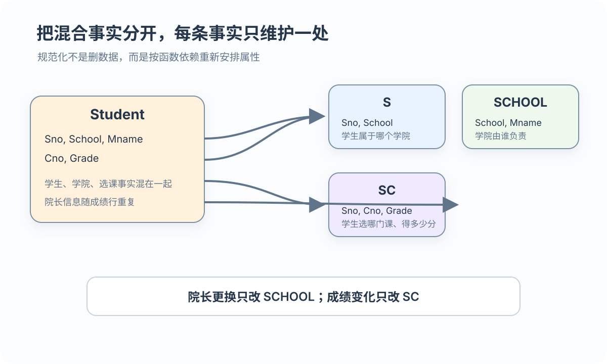
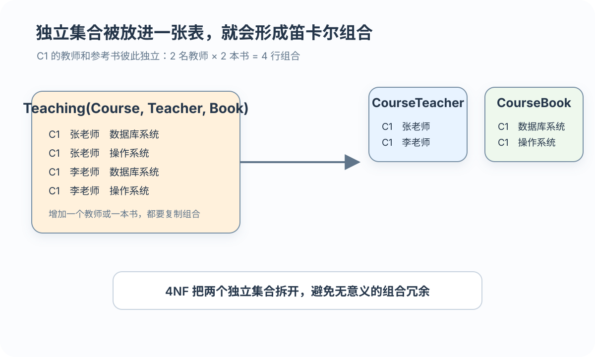

候选码与超码
候选码决定全部属性且不可再约简；超码包含某个候选码
为什么院长姓名要改很多行，删最后一名学生还会丢掉学院信息
 VER. 2608
Built with impress.js
VER. 2608
Built with impress.js
从“一个学号只属于一个学院”写出依赖，再根据数据重复和增删改问题分表
这个模式把学生、学院和选课事实放在一起，因此同一事实会在多行重复
| 异常 | 事实混合 | 结果 |
|---|---|---|
| 冗余 | 学生、学院和选课 | 院长信息重复 |
| 插入 | 只有学院没有学生 | 大关系没有独立学院事实的存放位置 |
| 删除 | 删除最后一个学生 | 学院信息一起丢失 |
| 更新 | 更换院长 | 需要修改大量重复行 |
对 R(U,F) 的任意合法实例，X 相同的元组必须有相同 Y；不能只看当前数据
X 是决定因素；Y⊆X 时为平凡依赖，否则为非平凡依赖。Sno→School 来自“一名学生属于一个学院”的规则，不是因为今天的表暂时没有冲突
本例 (Sno,Cno) 决定 Grade；School 只依赖 Sno，因而随选课重复
候选码决定全部属性且不可再约简；超码包含某个候选码
出现在任一候选码中的是主属性，其余为非主属性
不能删去决定因素中的任何属性
依赖组合码的一部分，或经中间属性间接依赖码
本例候选码：(Sno,Cno)；非主属性：School、Mname、Grade
把学生、选课和学院等事实拆开后，还要证明能无损还原、依赖仍可检查

4NF ⊂ BCNF ⊂ 3NF ⊂ 2NF ⊂ 1NF
范式逐级收紧；高范式满足低范式，但不代表查询代价和分解正确性已检查
| 范式 | 主要消除 | 记忆入口 |
|---|---|---|
| 1NF | 非原子分量 | 每个分量是原子值 |
| 2NF | 部分函数依赖 | 非主属性完全依赖候选码 |
| 3NF | 非主属性传递依赖 | 非主属性不传递依赖候选码；主属性被非码决定仍可能允许 |
| BCNF | 非码决定因素 | 每个决定因素都包含某个候选码 |
| 4NF | 非平凡多值依赖 | 多值依赖的决定因素包含某个候选码 |
候选码是 (Sno,Cno)；School、Sloc、Grade 是非主属性
| 依赖 | 判断 | 原因／分解方向 |
|---|---|---|
(Sno, Cno) → Grade | 完全依赖 | Sno、Cno 都不能单独决定 Grade；留在 SC |
(Sno,Cno) 对 School | 部分依赖 | 因为 Sno→School；移到 S-L |
(Sno,Cno) 对 Sloc | 部分依赖 | 因为 Sno→Sloc；移到 S-L |
2NF 分解为 SC(Sno,Cno,Grade) 与 S-L(Sno,School,Sloc)；S-L 的候选码是 Sno
在 S-L(Sno,School,Sloc) 中，Sno 是候选码，Sloc 是非主属性
S-L(Sno, School, Sloc) 重复学院与宿舍信息
S-SS(Sno, School) 与 S-SL(School, Sloc) 各自描述一个事实
STJ(S,T,J) 让 3NF 与 BCNF 的差异变得具体
| 判断 | 3NF | BCNF |
|---|---|---|
检查 T → J | J 是主属性，可以接受 | T 不是超码，不能接受 |
| 关注对象 | 非主属性对码的依赖 | 所有非平凡函数依赖 |
| 结果 | 可能仍有异常 | 函数依赖范围内更彻底分离 |
T→J 满足 3NF 但违反 BCNF；可分解为 ST(S,T) 与 TJ(T,J)，还需要另外验证无损连接和依赖保持
当教师集合与参考书集合彼此独立时，Teaching 会产生组合冗余

在完整关系 Teaching(Course,Teacher,Book) 上，Course→→Teacher 与 Course→→Book 表示两个值集合彼此独立；它们不是“Course 唯一决定一个教师”的函数依赖
4NF 把独立事实拆到各自关系中，并要求先明确全码和多值依赖的决定因素
| 原关系或操作 | 问题 | 分解后的效果 |
|---|---|---|
Teaching(Course, Teacher, Book) | BCNF 可通过，但 Course→→Teacher 使 4NF 不通过 | CourseTeacher + CourseBook |
| 同一课程增加教师 | 需要为每本书插入一行 | 只在 CourseTeacher 增加一行 |
| 删除一本书 | 可能误删教师事实 | 只删除 CourseBook 中的一行 |
分解为 CourseTeacher(Course,Teacher) 与 CourseBook(Course,Book)；多值依赖只在给定完整关系模式时讨论
提高范式后，还要检查约束能否在子表验证、连接是否多出或丢失元组
同一业务事实尽量只维护一处，减少冗余和更新异常
常用查询可能需要更多连接，读取路径和调优成本会增加
哪些查询最常用、需要连接几张表、原依赖能否检查、分解能否无损还原
属性闭包、依赖保持和无损连接可以继续验证分解结果
给定 S-L-C 与 Teaching，回答谁决定谁、哪些列是码、哪些值重复、怎样分表
写出 Sno→School、School→Sloc、(Sno,Cno)→Grade；由此判断 (Sno,Cno) 是候选码
School、Sloc 只依赖组合码的一部分；Sno 又经 School 决定 Sloc，分别指向 2NF 与 3NF 分解
STJ 中 T→J 的左部不是超码：3NF 可因 J 是主属性而接受，BCNF 仍拒绝
Teaching 中教师集与书籍集彼此独立，拆成 CourseTeacher 与 CourseBook；随后仍要验证分解准则
Sno→School→Sloc 为何是传递依赖，S-L 为何不满足 3NF？T→J？